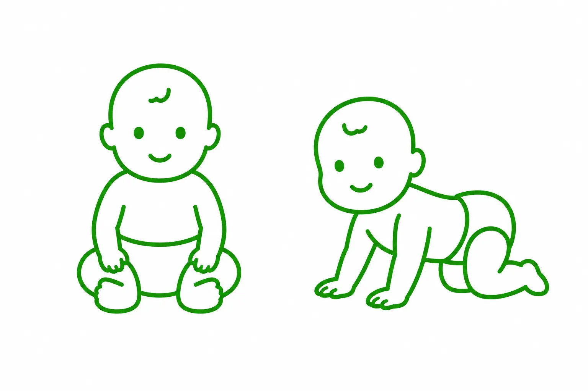

1. Terapia NDT Bobath
Terapia NDT Bobath to metoda neurorozwojowa. Jej celem jest wspieranie prawidłowego rozwoju ruchowego, poprawa jakości wykonywanych ruchów oraz zwiększenie samodzielności pacjenta w codziennym funkcjonowaniu.
Terapia opiera się na indywidualnym podejściu do pacjenta. Fizjoterapeuta poprzez odpowiednio dobrane techniki i aktywności wspiera prawidłowe wzorce ruchowe, ułatwia wykonywanie funkcjonalnych czynności oraz pomaga ograniczać nieprawidłowe napięcie mięśniowe i kompensacje.
Terapia NDT Bobath jest przeznaczona dla:
- niemowląt z zaburzeniami rozwoju psychoruchowego,
- wcześniaków wymagających wsparcia rozwoju,
- dzieci z obniżonym lub wzmożonym napięciem mięśniowym,
- dzieci z mózgowym porażeniem dziecięcym,
- dzieci z wadami neurologicznymi i genetycznymi wpływającymi na rozwój ruchowy.
Istotnym elementem metody jest edukacja rodziców lub opiekunów, dzięki której mogą oni wspierać terapię także w domu.